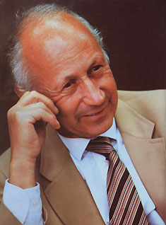

Whether Norman Cousins' life has involved editing the pages of the Saturday Review (which he did for 30 years) . . . writing 17 books . . . going abroad on presidential missions . . . negotiating for the release of two cardinals from Eastern Europe for Pope John XXIII . . . meeting with such legendary public figures as Pablo Casals, Winston Churchill, Albert Schweitzer, Albert Einstein, Bertrand Russell, Mahatma Gandhi, Adlai Stevenson, Nikita Khrushchev, Buckminster Fuller, and John F. Kennedy . . . heading surgical relief projects for victimsof Nazi medical experimentation and the atomic bombing of Hiroshima . . . providing food and medicine for thousands of starving Biafran children . . . helping to establish public television in the United States . . . heading a task force on an environmental program for New York City . . . setting up U.S/US.S.R. cultural exchange programs . . . serving on the Medical Advisory Board of the Veterans Administration hospital . . . playing golf, tennis, or the piano . . . exercising his considerable photographic skills. . . helping to cure himself, as he did in 1964, of a usually fatal collagen illness with the help of-among other things-massive doses of vitamin C and laughter (the experience he later chronicled in his bestselling book Anatomy of an Illness) . . . using similar techniques to recover from a massive heart attack in 1980 (which he described in his most recent book, The Healing Heart) . . . or serving, as he now does, on the faculty of the Medical School at the University of California at Los Angeles (UCLA), he has always striven to get, in his words, "the most and the best out of whatever may be possible."
His strong belief in the often untapped potential of humanity and his confidence in the indomitable human spirit-as well as his ability to pass that belief and confidence on to others-have become known in medical circles as Norman's special "dose of medicine."
Associate editor Sara Pacher and photographer Steve Keull were privileged recently to spend two very pleasant hours with this compassionate and courageous man in his office in the Brain Research Center at UCLA.
"I came away, "Sara remarked later, "with a subtle feeling of excitement, and a degreeof hope for the world that I haven't experienced in a long time. After all, as Mr. Cousins says, `We are not being called upon to rearrange the planets in the sky or to alter the composition ofthe sun. We are called upon to make decisions affecting our own welfare. The only price we have to pay for survival is decision. "'
PLOWBOY: In your book Human Options you wrote: "Belonging to a nation, man has nations that can speak for him. Belonging to a religion, man has religions that can speak for him. Belonging to an economic and social order, man has economic and political orders that can speak for him. But belonging to the human race, man is without a spokesman."
If you were that spokesman-and I've long considered you one of our best-what would you say should be done to make the world a safer and happier place for both ourselves and those who'll come after us?
COUSINS: First, I would want to call attention to the fact that we are living in a very primitive age in human history. Despite all the apparent evidences of civilization, we are really bumping along at a very low level and dealing primarily with philosophies that point us away from survival. The primitive nature of human society is reflected most of all in the inadequacy of the nation as a form of human organization. The nation came into being for the purpose of protecting the lives, property, and values of its citizens, and there's no nation in the world that is able, today, to perform that basic function. Instead, the nation has become a point of incendiary confrontations with other nations in a world too small for such confrontations.
PLOWBOY: Or, as you once suggested, the world has become one before it has become whole.
COUSINS: That's right. And so we are left with the need to devise a collective mechanism for survival. We've tried in the past to evolve such mechanisms, but they haven't kept pace with certain other aspects of human development: our fascination with weaponry, for example, or our ability to devise means of destroying large numbers of people. We have, you see, no corresponding advance in terms of our philosophy or ideology. And the distance between our philosophy and our weaponry defines the problem rather sharply.
Therefore, if I could wave a magic wand over the planet, the first thing I would do is to take away from the nations their macho toys and relieve them of the absurdity that they are all clinging to, which is that security has something to do with the creation of weapons of cataclysmic destruction: And I would get people to recognize that security in today's world depends on the control of force and not the pursuit or accumulation of force.
Next, I would institutionalize effective world law to replace the present anarchy. Even when we do that, there will still be enough folly left to please anyone interested in folly.
PLOWBOY: You have noted that growing up as a species is not all that different from growing up as an individual. That being so, how old would say the human race is, at the present time?
COUSINS: Prenatal.
PLOWBOY: Prenatal! Well, if we're that young, we obviously have a lot of potential for growth!
COUSINS: That's the happy prospect. It's always nice to think we can go somewhere other than where we've been.
PLOWBOY: And do you think our "birth," when and if it occurs, will be a traumatic event?
COUSINS: The interesting thing about birth is that, though it is a traumatic experience, the body compensates for it. The process of moving a child through an opening about four inches wide should be excruciating, but it's been discovered that during this event nature enriches the baby with large amounts of endorphins and enkephalins [natural, mind-produced painkillers and pain inhibitors] to enable the newborn to tolerate that particular experience. So I think the process of being born into a collective, responsible organism is one that the human species can probably survive.
I can't think of anything more painful for humankind, as a matter of fact, than surviving a nuclear war and wondering how it was that we didn't see it coming . . . wondering why we allowed this great default to take place. That would be the most agonizing experience in the history of the human race . . . far more painful than the war itself. Such a war could be rather brief, but the suffering would last a very long time.
PLOWBOY: But don't you think that most people recognize the insanity of nuclear war?
COUSINS: In the past two or three years, there's been an increasing awareness of the dangers. One can point to markers along the way-such as the nuclear freeze campaign, the awareness of a nuclear winter, and the film The Day After-that have helped to increase both concern and resolve. But I don't think that concern has been broad enough, or deep enough, or has yet reached the critical mass at which politicians are going to be punished and thrown out of their jobs unless they move in the direction of that concern. People haven't yet recognized this threat, as they did Watergate or Vietnam, as a problem that calls for a certain amount of dedication and blazing determination.
There's still the old idea, you see, that people in government can be trusted with foreign policy, since they supposedly have access to a great deal of information that's not generally available. This, of course, is a great fiction. The information at the top may be broader and deeper, but only on a level of plot and counterplot. (What can we do to an enemy, and what can they do to us, and who ought to do it. Or, let's do unto others before they do unto us-that sort of thing.) But as it concerns the broadest arc of the philosophical picture, we shouldn't consider the people on the top to be necessarily well informed.
Indeed, one of the dangers confronting our society is the assumption that as you go up the ladder in government, the philosophical information and sense of responsibility are commensurably greater. Quite the contrary. Instead of paths of responsibility, which have to do with the utilization of our resources and the ability to think of larger responsibility, the higher up you go, the more you get into the zones of manipulation, confrontation, and conspiracy.
An example of this is the attitude toward the development of new weaponry-that only by producing weapons of instantaneous devastation can we discourage an enemy from hitting us first. But from the moment we get into efforts designed to make someone else either think a certain way or reach decisions that we think would be compatible with our own welfare, we start dealing, not with military factors primarily, but with psychological factors.
The whole purpose of making these outrageous weapons, we are told, is to dissuade the other side from using theirs. If we accept that rationale, we also have to recognize that we are then dealing with basic laws of psychology, and we have to be willing to examine what we're doing according to those laws.
Psychologically, if we want to persuade the other side not to hit us first-or not to hit us under any circumstances-then the last thing in the world we want them to do is to become nervous about our intentions. We certainly don't want to push them closer to the central triggers. For example, if the other side refused to give us a pledge of no first strike, and if such an act pushed us closer to the trigger, then we have to assume that the same basic laws of psychology would apply if the situation were reversed.
But I don't think we are civilized or educated enough to recognize that what affects us would also affect other people. And so we are violating the fundamental laws of human psychology, even though we attempt to justify military policy on the grounds that it can have a psychological impact.
Actually, if we really thought about the situation, we would want to build on our mutual concerns-to get our own people and other peoples to understand that there is no security for us in building more sophisticated and destructive weapons. We're just drilling a larger hole in our end of the boat than the other side can drill in their end of the boat.
That's what I mean when I say that human society is very primitive. We are relying on notions which are absurd to create a foundation for the future . . . not just for this society, but for the human species itself.
Frankly, I see no future for freedom under the present world condition of anarchy . . . a condition to which both the United States and the Soviet Union are making major contributions.
PLOWBOY: Yet war has long been recognized as an awful way to try to solve problems. Why, then, is it so hard for human beings to renounce such self-destructive behavior?
COUSINS: You can't expect to create institutions (which is what we are fundamentally talking about) to deal with problems just by dousing people with a sense of horror and distaste. We're not going to get rid of war just by recognizing that no purpose is served by it. Furthermore, sometimes you do have evil men in the world who use their force to conquer others. So you can't blame people for wanting to be able to resist.
But at the same time, we can blame ourselves for not creating circumstances under which we do a better job of preventing evil men from coming to power . . . or of ordering the affairs of nations so that they don't stumble into senseless conflicts they don't know how to handle.
Obtaining world peace is really a matter of combining our spiritual resources with our ability to comprehend problems and make rational decisions. As it is, we have a lot of loose cannons rolling around on the deck, and sooner or later one is going to go of.
Of course, it's true, historically, that being peaceable and wellintentioned doesn't constitute adequate protection for a society. It's also true that in the past there have been predatory nations and predatory leaders who have exploited human weakness. So disarmament by itself is not the answer. We can understand that. But what we haven't yet understood is that being heavily armed is not an answer either! Therefore, we have to develop new answers, and at this stage, we have to recognize the limitations of both an all-out arms race and unilateral disarmament. [EDITOR'S NOTE: For more on this subject, see pages 43 and 122.]
PLOWBOY: What are some of our alternatives?
COUSINS: Well, obviously, one would be to define as a fundamental objective in American foreign policy the need to move toward the establishment of law in the world. We must dedicate our foreign policy to that end. We should make clear that we want to explore with all other nations what national commitments have to be made in a regulated world society, and that the ultimate objective of all nations has to be the creation of a functional world order that makes sense for our time on earth. We should give that at least equal emphasis with everything else in our foreign policy. If we did, I think we'd get a great response. What's more, I think moving toward such rational objectives is a fundamental form of security.
PLOWBOY: You mentioned the need for institutions to deal with world problems, and I know you've offered your support to such groups as Planetary Citizens. Despite their current lack of influence, you obviously feel that such organizations are of value
. COUSINS: Yes, I do. I've also worked for many years for the World Federalists, and that-to me-is as important an activity in this direction as one might conceive, because this group gives people something to do about world problems. It considers, for example, ways in which the United Nations can be transformed into a fully functional organization that will do the job that was originally set for it, which was to keep the peace. I would, in fact, urge everyone to join the World Federalists, which leans heavily on the historical American experience. [EDITOR'S NOTE: For information on local chapters, contact World Federalists Association, 1011 Arlington Blvd., Suite W219, Arlington, VA 22209; 703/524-2141.]
PLOWBOY: You've often stressed the importance of history, yet that's not a very popular subject nowadays.
COUSINS: And we pay a terrible price for that! The importance of history is that it should keep us from repeating mistakes. But in order to understand the importance of history, we have to know what education is. It's not just a matter of knowing enough to get a job. There's a quaint notion that the main reason we go to school is to be able to earn a salary. The vocationalization of American education has been one of the unhappy developments in our society in the last 50 years. I don't think we yet realize the high price that has been paid for that error.
The main purpose of education should be to enable us, as John Dewey said, to come into the possession of all our powers, to help us grow as human beings, and to locate our potentialities so that we can better develop them.
If we don't do that, we are squandering our resources on a massive scale. Developing a sense of history is part of the process of social evolution. It's conscious evolution in the sense that we are able to have an understanding of where we've been, which shows the way we have to go. Education begins with that sense of history. But we are becoming detached from history, and it's hard to believe that such a failure has no consequences.
PLOWBOY: Just as Americans have forgotten, or never learned, the lessons of the past, many of our politicians have come to seldom think farther into the future than the next election. How can we get them, and humanity in general, to think in larger and longer terms . . . to attempt to base decisions concerning war, pollution, or conservation-as some Native Americans did-on the impact that those courses of action will have seven generations into the future?
COUSINS: I think that whatever people conceive to be important dominates their horizon. Therefore, it becomes the task of everyone who has some concern about such issues to share it with others until we create a consensus of concern. However, as long as we're caught up in this macho madness of nuclear weapons, it's going to be very difficult to address ourselves to tomorrow, much less to life for the next generation.
But I think that if we take seriously certain long-range concepts-which are certainly not alien to this country-and believe in these ideas deeply enough ourselves to share them with others, then we can hope to reach a point at which even the leaders who are concerned about the next election, rather than the next generation, will be forced to respond.
After all, with all its faults, we still have a magnificent society. It's still one in which it's possible to make mistakes without losing your head. It's still a society in which people in positions of power don't yet have the authority to define how we are to think and act-and who, despite all their power, are still our servants. They know we don't hold them to account as we should, but we have a society which is capable of becoming less imperfect than it is.
PLOWBOY: On the other hand, in Human Options you wrote that "to talk about the need for perfection in human beings is to talk about another species."
COUSINS: Yes, but what is most important is the quest for perfection. We are not perfect. We may never be perfect. But I think that the desire to become better in every respect has not just anthropological but philosophical and political implications. Such a philosophy was probably what was most significant about the young men who founded this country-the notion that we can be less imperfect than we are right now. We need not worship our limitations.
PLOWBOY: Since you have also held that, basically, everything starts with the individual, what are some of the steps a person can take to begin this quest for perfection?
COUSINS: We can make a basic commitment-for example, a commitment to eradicate not just the means of war but war itself . . . to create the conditions that make it unnecessary for humans to kill or be killed. We can recognize that this may very well be the particular task assigned to this generation if there's to be any other generation. That commitment in itself creates certain other imperatives in our lives and almost automatically dictates a certain course of action. It dictates our parameters with respect to our friends, neighbors, and professional colleagues. It dictates the connections that we make to organizations that are working along with us. It dictates what we do politically-not just on the presidential level, but on all of the other levels. It dictates the amount of time that we're going to give to those things that are really important.
So everything does begin, it seems to me, with making an initial commitment. Other than that, I don't have any particular prescription to write for individuals. Each of us, in his or her own way, will move in those directions that are consistent with who we are and what we do.
We tend, you see, to move along the path of our expectations. I'm sure, for example, that there are very few things that you've really wanted to do in life that you haven't wound up doing-not because wishing makes it so, but because wishing opens you to all sorts of possibilities that wouldn't occur to you otherwise and enables you to recognize positions of opportunity and strength that you wouldn't ordinarily perceive. That's why you have to be very careful about what it is you want!
PLOWBOY: Speaking of the power of expectations, some of the current research here at the UCLA Medical Center has been backing up many of your beliefs with some impressive scientific discoveries. What are some of the most exciting new developments you've been exporing?
COUSINS: Everything here is exciting. What I'm learning tends to persuade me that the big problem is not in human capacity or failure to do. It's in our failure to think and our failure to feel. We have the capacity. We don't yet have the awareness to trigger the utilization of that capacity.
In fact, I can't think of any problem that's beyond human reach. I could wish that the important problems were recognized as such, but since we have the capacity to do even that, it's hard to be a total pessimist . . . which doesn't suit me anyway. There's not enough fun in it.
PLOWBOY: Are you still lecturing to medical students?
COUSINS: No. This is my research year. I'm interested in the biochemistry of the emotions and the concept of the brain as a gland. When I first came here, researchers were able to inventory some three dozen basic secretions of the brain. Since that time, it's become apparent that the brain has not only the ability to mobilize and make available these secretions to the body but also the ability to draw upon these secretions in combination. This means that the prescribing power of the brain is limitless, because it has available to itself thousands upon thousands of combinations of secretions that it can pour into the human bloodstream. And they can make a change!
In short, I can't think of any creature in the world that has a more powerful or more varied built-in apothecary to prescribe for its body's needs than a human being does. And what makes the human species unique is that the attitudes have a great deal to do with the prescribing power. Not all of it is locked into the autonomic nervous system. Our determination to do certain things and our ability to conceive goals are aspects of human uniqueness. We have not just the autonomic will to live but the conscious will t o live. All of these correspond to and draw upon the prescribing power of the human brain, but at the present time it's insufficiently recognized as being available to us. Certainly, it's insufficiently used. However, it's hard for me to wallow in pessimism when the potentiality for meeting problems is there in our species.
This belief does, however, lead me to think that we face two distinct requirements: One is the need not to ignore, minimize, or back away from encounters with our problems. But. there's also the second great factor, which is the need to have confidence in our own abilities to do whatever has to be done. So you have these two broad aspects of the human predicament right now. And both of them are within our reach. It's reassuring, to say the least, to know that what has to be done is not beyond us.
PLOWBOY: Do you think that as we get more power over our own bodies, we will also begin to work more effectively together?
vCOUSINS: Yes. The absence of knowledge of what we are and what our potentialities may be tends to separate us. And trying to deal with large problems and large causes in the condition of separation leads to the denial of the problem or to a feeling of helplessness, which, in turn, leads to hopelessness.
Helplessness and hopelessness are devitalizing in society, whereas their opposites certainly create great mutual and collective energy. So, it seems to me that there's great energy waiting to be used both individually and collectively. And the more we know about ourselves, the more we learn about our connections with others. The more we learn about our potentialities, the closer we get to an awareness of how those potentialities can be used to serve our collective needs.
I find it very exciting, for example, that it has now definitely been established that negative emotions can cause cancer. It's exciting to move along this trail and discover that the T cells and the B cells in the immune system become impaired under circumstances of depression, despair, or grief.
This is not to say that we should go out and cheer when people become depressed because their misfortune can help prove the connection between psychological factors and serious illness. But it's exciting, nonetheless, to know that if the negative emotions can cause cancer, then the positive emotions may help to prevent it-or help to conquer it if it should occur. In short, it's always exciting to know that there's a scientifically verifiable basis for a theory that serves the human condition. It's only when we feel closed off that we have problems.
For instance, one of the things that I've observed in people who have cancer-and I've now had a chance to study about 370 of them at close range-is that their illness suddenly becomes intensified coincident with the diagnosis. The disease will be advancing at a certain rate, and suddenly, when they have a label to attach to those symptoms-swoosh!-the disease takes off, because there are certain responses in the body.
In the same vein, if people would understand that cancer is a treatable disease-if the way in which they were informed of their cancer was put in the form of a challenge-would that approach help them combat the illness? The knowledge that our uniqueness as human beings can make a difference in the way we respond to challenge is vastly exciting.
When I meet with cancer patients whose lives have been prolonged far beyond the time predicted for them, I ask them what the vital turning point for the better was as they perceived it. One lady of 75 said that her turning point was in the doctor's office when he said to her, "Mrs. A, you have cancer, and it's terminal. I give you four to six months to live." And she told me, "I looked him straight in the eye and said, 'Screw you!' "
The significant thing is that she wasn't denying the diagnosis. She was just denying the verdict. And she was also protesting the arrogance of any human being who would make a pronouncement of doom upon another human being.
PLOWBOY: How many doctors understand that, though?
COUSINS: One aspect of the medical scene today is that both national and private health plans discourage doctors from doing the thing that's most important in treating patients-talking to them. Doctors are paid instead for procedures and tests, a policy that inflates the cost of the national health program grotesquely.
Everything, in fact, is pushing us in the direction of abstract technology with no recognition of the flaws and weaknesses in that technology. That's the great danger-and not only in the medical field! With high technology supported in almost every aspect of the national life, people tend to take their values from it, so that we stop thinking . . . we stop talking . . . and we live by numbers.
PLOWBOY: How have the medical students here reacted when you've introduced them to broad subjects like philosophy and literature instead of tests and numbers?
COUSINS: I think that they're generally way ahead of me. It's a mistake to think of the medical profession as consisting of a single unit. I've been tremendously gratified by the support I've received here inside the university, and I can't take the position that doctors, as a group, are any less enlightened than any other group. For example, I've had the hospitality of the pages of the Journal of the American Medical Association for quite some time now, and I've been tremendously encouraged by the attitudes of the doctors that I know.
In fairness to all physicians, you have to recognize that this is a profession that's long on fatigue and short on time. It's very difficult, for example, to be compassionate when you go without sleep for a day and a half. And yet, in the training of doctors, especially in their internships, we make all the wrong assumptions in the mistaken notion that we're giving them some sense of what the profession is really like. As a result, we tend to set up an adversarial relationship with patients.
For instance, a doctor is told that he has a woman ready to deliver (you don't even have to deal with a name, in fact, it's always "a delivery") and is reminded simultaneously that 404 has her finger on the call button and please go up there and see her. Well, after 32 hours of this, without sleep, an intern's view of any patient is going to be colored by such circumstances. Internship becomes not just a form of training but a meat grinder.
Such instruction troubles me. The great wonder is not that there are so few doctors who take the time to talk to their patients and who are compassionate, but that-considering the difculties that so ciety puts in their way-there should be so many. I have, in fact, a very healthy respect for the profession and for the ability of many physicians to maintain their humanity under conditions of extraordinary difficulty.
I know that after I get through seeing just three or four cancer patients in one day, I'm depleted emotionally. Yet we expect doctors to feel a stake in the outcome of every case. By the same token, when they do-since they can't win them all-they're going to be hurt. And after a while, just in order to survive, many physicians feel they have to desensitize themselves to human suffering and human need.
PLOWBOY: Is there an answer to this quandary?
COUSINS: Of course.
PLOWBOY: I should have known better than to ask you a question like that! What is the answer?
COUSINS: First, with respect to the training of doctors, I think that internship shouldn't be as much an ordeal as it's become. It ought to be a time of refinement-a time when doctors can actually meet with patients and learn to develop relationships with them, which is the most important aspect of medicine anyway. That's where the emphasis ought to be in internship-not just on brutal hours. But since this is really an economic matter rather than a philosophical policy, I'm very much afraid that hospitals resist the idea of interns spending fewer hours . . . because, unhappily, that would mean that hospitals would have to absorb more expense. However, as a matter of doctrine, I don't think it's necessary to crush a physician in order to make him or her a good one.
PLOWBOY: If research is proving that emotions affect the immune system, it's obvious that talking to patients is going to become much more important to the medical profession.
COUSINS: Precisely. And the way the doctor connects the belief system to the healing system will be as important as almost anything that he or she could prescribe. In short, the need is to recognize that the patient is the healer-not the doctor.
I see a time coming in the development of medicine when doctors will continue to prescribe, but their prescriptions will not be on the basis of what they can put into the body, but on what they can get the body to do . . . how they can create a partnership with their patients and have a sense of challenge emerging in serious cases, rather than a verdict that's superimposed. As a result, there will be a vast upgrading of the American health system. It will be less costly, too, for technology will be used to confirm, rather than serve as an automatic part of, diagnosis.
PLOWBOY: Getting back, once again, to individual response, what can a person do when he or she-or a friend or family member-is struck down by a serious illness? Is there a particular approach, for example, that you usually take when a doctor asks you to visit a cancer patient?
COUSINS: First of all, every serious disease inevitably produces a sense of panic. What's going to happen to me? Am I going to die? Why am I not getting better? And panic is a disease that's superimposed on the underlying disease. Panic produces certain physiological changes: Blood vessels become constricted . . . the heart has to work harder . . . you have a problem, sometimes, with the endocrine system as a result of panic, fear, desolation, and despair. So illness becomes almost a mad toboggan ride where, as you pick up speed, it gets worse, and as it gets worse, you pick up more speed. Panic interacts with the disease by making the disease worse.
Panic, however, is generally the result of a feeling of helplessness. It's only when we can't do something about a problem that we begin to cast about for an answer and become panicky about it. The way, therefore, to make the comeback is to modify or eradicate those feelings of helplessness.
Now, helplessness, in turn, is the result of the way we tend to think about the human body. We are unaware of what our resources for combating problems are. We think that we have nothing to offer and that science has everything to offer. And, in thinking this way, we deprive ourselves of that measure of beneficial change that is built into the human organism. We assume that since we are unaware of all the processes that go on inside us-the coursing of the blood, the workings of the endocrine system, the firing of the neurons, the reproduction of the cells-we have no measure of control over them. And that's the greatest fallacy of all. We're not barred from some measure of control-even over the autonomic processes.
So one of the things that I do when I work with patients is to bring a skin thermometer with me. Now, under ordinary circumstances, skin temperature runs from 76° to 80°, and we use the thermometer to prove to people that they can move their blood around as an act of will. They can move it around inside their head and into their hands and thus increase the temperature of the skin. So we put them through various primitive biofeedback exercises, and when they see that they can actually increase the surface temperature of their skin by 10° or more, just through an act of willpower, they are astounded. Then we say, "Well, if you can do that, what else can you do?"
As I said before, it's that blazing determination that is necessary. And the end of helplessness is the beginning, it seems to me, of health.
This is what is unique about the human species. We do have the ability to put an end to our feelings of helplessness and, therefore, of panic. And that's an essential part of the treatment of the patient.
The doctor who wants to treat a patient with science does much better when the patient's confidence, purpose, and ability to move along a certain course are enhanced. In that kind of environment, what the doctor does is going to be that much more effective.
PLOWBOY: But there must be times when the best efforts of both you and the doctor fail to get a positive response.
COUSINS: That's true. Generally, when you first start getting patients into this procedure of influencing their autonomic responses, you try to put them into a relaxed state. In older to do that, I ask them to sit or lie back and think of the most beautiful thing that has happened in their lifetime and to try to make it very real. However, now and then I find those who claim that they can't think of anything beautiful that's happened in their lifetime, and they may, be telling the truth. That's very sad, and I can't be untouched by it.
Then too, when I see patients who are trying very hard to do all the right things and who are making a supreme effort in terms of their willpower, determination, and confidence in themselves and their doctors, and who still lose ground, I find it very emotionally depleting. But, fortunately, that doesn't happen very often. In maybe four cases out of seven, we do see progress, and that produces an elation that the family,, the doctors, and everyone all share.
I've also been very moved by events such as the following: I had a telephone call from a woman who said she wanted me to help persuade her sister not to get married. "We're getting ready to send out the wedding invitations," she explained, "and I just think it would be rather eerie and grotesque to have to send out invitations to the same group of people, shortly after the wedding, to come to my sister's funeral. She has cancer, you see, and I don't think she should go ahead with the marriage.
" "Do your sister and her fiance both know she has cancer?" I asked her.
"Yes."
"And they still want to get married?"
"Yes."
And I said, "Well, in that case, what a blessing this is. How wonderful it is that they will have this left to them . . . that she will know before she dies that there has been a great happiness in her life . . . that they can plan on something and consummate it. The one thing a cancer patient sometimes can't do but needs to do is to plan on something! I think that you ought to rejoice that your sister wants to get married."
So she thought on that for a while and agreed that maybe I was right and that she would do everything she could to support her sister.
Then, two months later, I got a note from this woman saying that her sister did, in fact, get married. "The most wonderful thing that could happen has happened," she wrote. "The tumors are shrinking!"
One of the principal aspects of the human species is the ability to feel deeply about things, to have such a generous supply of beautiful emotions: love, hope, faith, the will to live, creativity, joyousness, purpose, determination. And it seems a shame to have them underexercised.
PLOWBOY: What amazes me about you is that, even when facing the very real possibility of your own death, you've always managed to exercise and to share with millions those beautiful emotions. You've even pointed out that it's all right to die . . . that letting go is an art form in itself.
COUSINS: I can't imagine anything more arrogant than telling a person that he or she doesn't have the right to decide when to let go. And while I believe in life and the life force . . . while I believe that the whole purpose of life (it's certainly true of the practice of medicine) is to get the most out of whatever is possible, you have to recognize that there comes-the time when it's natural to die. And this is a decision that you can't impose on anyone else.
I would hope that when I make that decision for myself, I won't have people standing over me, lecturing me or trying to amuse me.
PLOWBOY: Who knows, death may be the biggest laugh of all!*
What is the eternal and ultimate problem of a free society?
It is the problem of the individual who thinks that one man cannot possibly make a difference in the destiny of that society.
It is the problem of the individual who doesn't really understand the nature of a free society or what is required to make it work.
It is the problem of the individual who has no comprehension of the multiplying power of single but sovereign units.
It is the problem of the individual who regards the act of pulling a single lever in a voting booth in numerical terms rather than historical terms.
It is the problem of the individual who has no real awareness of the millions of bricks that had to be put into place, one by one, over many centuries, in order for him to dwell in the penthouse of freedom. Nor does he see any special obligation to those who continue building the structure or to those who will have to live in it after him....
It is the problem of the individual who recognizes no direct relationship between himself and the decisions made by government in his name. Therefore, he feels no special obligation to dig hard for the information necessary to an understanding of the issues leading to those decisions.
In short, freedom's main problem is the problem of the individual who takes himself lightly historically.
Who is the enemy? The enemy is not solely an atomic-muscled totalitarian power with a world ideology.
The enemy is many people. He is a man whose only concern about the world is that it stay in one piece during his own lifetime. He is invariably up to his hips in success and regards his good fortune not as a challenge to get close to the real problems of the age but as proof of the correctness of everything he does. Nothing to him is less important than the shape of things to come or the needs of the next generation. Talk of the legacy of the past or of human destiny leaves him cold. Historically, he is the disconnected man. Hence, when he thinks about the world at all, it is usually in terms of his hope that the atomic fireworks can be postponed for fifteen or twenty years. He is an enemy because nothing less than a passionate concern for the rights of unborn legions will enable the world itself to become connected and whole.
The enemy is a man who not only believes in his own helplessness but actually worships it. His main article of faith is that there are mammoth forces at work which the individual cannot possibly comprehend, much less alter or direct. And so he expends vast energies in attempting to convince other people that there is nothing they can do. He is an enemy because of the proximity of helplessness to hopelessness.
The enemy is a man who has a total willingness to delegate his worries about the world to officialdom. He assumes that only the people in authority are in a position to know and act. He believes that if vital information essential to the making of public decisions is withheld, it can only be for a good reason. If a problem is wholly or partially scientific in nature, he will ask no questions even though the consequences of the problem are political or social.
The enemy is any man in government, high or low, who keeps waiting for a public mandate before he can develop big ideas of his own, but who does little or nothing to bring about such a mandate. Along with this goes an obsessive fear of criticism. To such a man, the worst thing in the world that can happen is to be accused of not being toughminded in the nation's dealing with other governments. He takes in his stride, however, the accusation that he is doing something that may result in grave injury to the human race.
The enemy is a scientist who makes his calling seem more mysterious than it is, and who allows this mystery to interfere with public participation in decisions involving science or the products of science. His own specialized training may have shielded him from the giveand-take so essential to the democratic process in government.
The enemy is any man in the pulpit who by his words and acts encourages his congregation to believe that the main purpose of the church or the synagogue is to provide social respectability for its members: He talks about the sacredness of life, but he never relates that concept to the real and specific threats that exist today to such sacredness. He identifies himself as a man of God but feels no urge to speak out against a situation in which the nature of man is likely to be altered and cheapened, the genetic integrity of man violated, and distant generations condemned to a lower species. He is a dispenser of balm rather than an awakener of conscience. He is an enemy because the crisis today is as much a spiritual crisis as it is a political one.
|
 |
|
|